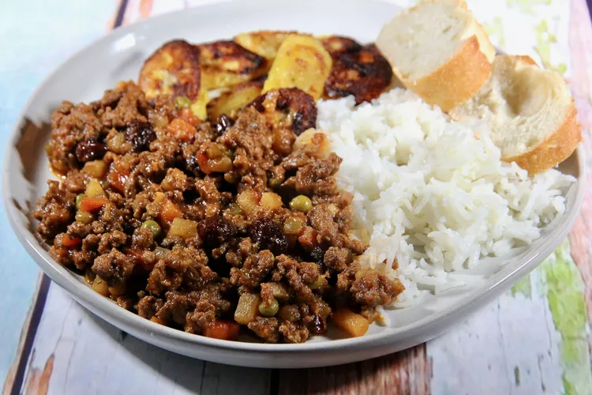

Home
How To Make Arroz a la Cubana

Description
This yummy dish is composed of plain white rice, a variety of vegetables, meat and some bread
to eat with. This wonderful combination of flavours can be decorated with a couple fried eggs
on top if one likes. Don't hesitate to make it, you'll enjoy like a kid!
Ingredients
The recipe requires of the following ingredients:
- 1 tablespoon vegetable oil
- 1 medium potato, peeled and diced
- 1 medium carrot, diced
- 1/2 medium onion, diced, or to taste
- 2 cloves gralic, minced, or to taste
- 1 pound ground beef
- 1/4 cup water
- 2 tablespoons soy sauce
- salt and ground black pepper to taste
- 1 medium bell pepper, diced
- 2 tablespoons raisins
- 2 tablespoons peas
- 2 cups hot cooked rice
Steps
Here's the steps to follow to get a fully-flavoured rice. Enjoy!
- Heat oil in a large skillet over medium heat. Add potato and carrot; saute for 3 minutes. Remove to a bowl.
-
Add onion and garlic to the hot skillet and saute until slightly brown, 5 to 7 minutes. Add ground beef; cook and
stir until browned and crumbly, 5 to 7 minutes. Add potato-carrot mixture back to the skillet with water, soy
sauce, salt, and pepper. Cover and simmer until potatoes are tender, 5 to 8 minutes.
- Add bell pepper, raisins, and peas; cook until heated through, about 2 minutes. Serve over hot rice.